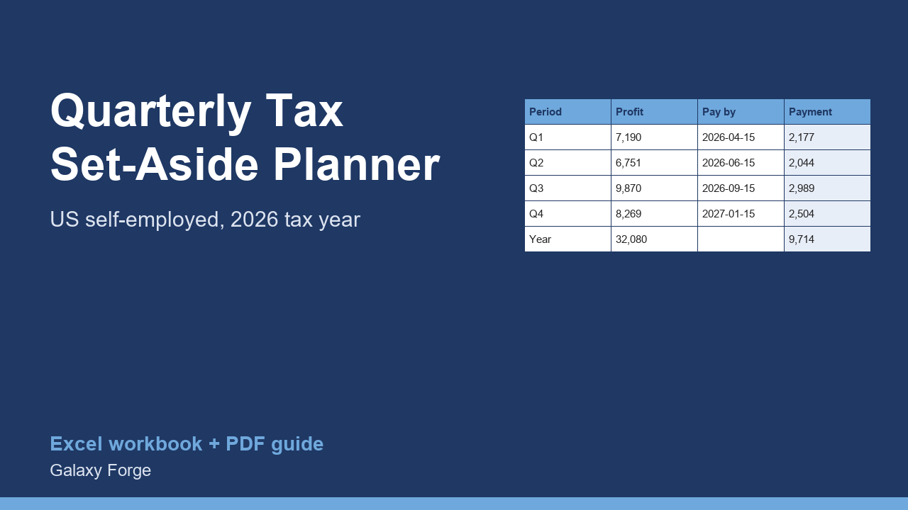

Log income and expenses as they happen and see, each quarter, how much to set aside and pay for federal income tax, self-employment tax and state tax.
If you are self-employed in the US, nobody withholds tax from your income. The IRS expects you to pay during the year, in four estimated payments, and charges an underpayment penalty if you do not. Many freelancers only find out how much they owe in April, when the money has already been spent.
This planner turns that into a routine. You log each payment you receive and each business expense; the workbook assigns them to the IRS estimated-tax periods, and for each quarter calculates self-employment tax, an estimate of federal and state income tax, the amount to pay by the due date, and the share of income to set aside.
It also calculates the safe-harbor installment based on last year's tax, which is the amount that protects you from the underpayment penalty even if this year turns out bigger.
1) Settings: enter your estimated federal income-tax rate and state rate (see the guide's tips), any W-2 wages for the year, and last year's total tax for the safe-harbor figure. 2) Income: one row per payment received, with the date it arrived and the amount. 3) Expenses: one row per business expense; set the business-use % for mixed items such as a phone. 4) Quarters: read the payment due for each period and the set-aside %. 5) Before each due date, pay at least the safe-harbor installment or the estimated amount, through IRS Direct Pay or EFTPS.
Price: $12, one-time. Download: quarterly_tax_set_aside_planner.xlsx (Settings, Income, Expenses, Quarters) and this guide. Works in Excel 2016 or later, Excel for Mac and Excel on the web; opens in Google Sheets and LibreOffice.
New product, listed 2026-10-23: no sales or reviews yet. Example figures in the workbook are illustrative.
This workbook estimates taxes for planning; it is not tax advice and does not replace Form 1040-ES or a tax professional. It uses your own estimated income-tax rates and does not model every deduction or credit. Confirm figures with a qualified tax preparer.